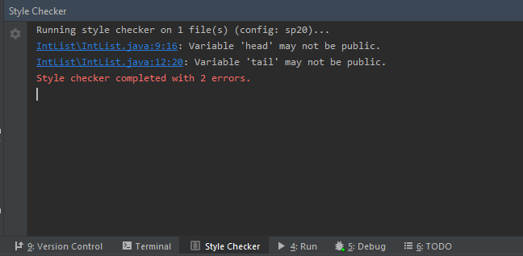

IntelliJ
Using IntelliJ
IntelliJ Documentation
As we have mentioned, IntelliJ is an IDE that is widely used in industry which has its advantages and disadvantages for you. This means you will learn how to use a real tool, one that you might keep using for years after you graduate. IntelliJ is also incredibly powerful and can allow you to code in ways perhaps unlike anything you have seen before in previous classes. As it is widely used, they have dedicated resources to maintaining documentation. A complete guide can be found here and they also have many helpful video tutorials here.
By looking at these links you can notice one disadvantage of using IntelliJ is that there are so many features and configurable settings that it can be overwhelming. Their documentation and videos often might mention things you have never heard of, but that does not mean you won’t be able to use IntelliJ effectively in this class. We will do our best to make this process as painless as it can be for you, and hopefully will help to make you more efficient in programming.
Out of the guide and tutorial videos, we have found the following pages / videos to help jump start learning how to develop in IntelliJ. This list is probably too long to get through in its entirety in addition to the rest of the lab. We have included it here as a reference that you can finish on your own time, and have split things into “Read Now” and “Watch Later”. If you have time continue to explore the listed resources and try to experiment with different workflows that work for you.
Essentials
- Overview of the user interface: This is a very high level overview which explains some of the various different windows and names IntelliJ uses to describe them. Understanding this will help you to understand their other reference material.
- Discover IntelliJ IDEA: This guide is longer and explains some of the most important functionality of the IDE along with helpful keyboard shortcuts that can be used. Feel free to just skim this for now, and again if there are sections which use vocabulary you are unfamiliar with that is fine. Some parts of this guide refer to features that we will not use. If the rest of the documentation feels too large, this is a one stop shop which contains explanations of most of the functionality we will use this semester.
Advanced Features
- This video shows how to efficiently navigate the IDE with minimal mouse / trackpad action. A lot of the features presented in this video are not needed for use of the editor, but can make you quicker at getting things done. If you have the time try to watch this and if possible follow along. Even just knowing that this functionality exists can be useful for the future.
- This video shows the power of code generation within IntelliJ. Again the features shown here are more advanced than what you will likely need to succeed in this class, but when watching try to pick up on new things that you can work into your use of the IDE
- Finally this video discusses some of the Git (or other version control) integration with the IntelliJ IDE. Throughout this course we will be expecting you to understand the Git CLI (command line interface), but sometimes it may be useful to use some kind of GUI (graphical user interface) to visualize changes to your Git repositories. Again, this is not something we expect students to be using as their primary method of interacting with Git but it is helpful to know that it exists.
Using the CS 61B Plugins
Java Visualizer
This plugin contains a built-in version of the Java Visualizer, a tool similar to Python Tutor which you may have used in CS 61A or other previous courses. This tool is intended to help you debug and understand your code, and is integrated into IntelliJ’s Java debugger. Students often find this helpful to transition to debugging in IntelliJ, and unfortunately at some point in the semester the code we will be running will become too complicated for the visualizer.
To use the built-in visualizer you must be debugging your code, so you can follow along the steps above to start the debugger again. When your code stops at a breakpoint, you can click the Java Visualizer icon:

After clicking this button, the Java Visualizer will appear, displaying the stack of the currently paused program as well as a diagram of the different variables.

As you continue to step through and pause your code, the visualizer display will update accordingly to show you what’s going on in your program. In the coding portions of the lab try using the visualizer to check your understanding.
Style Checking
In this class, you will eventually be required to make sure your code conforms to the [official style guide][../style/index.md]. The CS61B plugin includes a helpful style checker, which will check your code and inform you of any style errors and their locations. This will allow you to fix your style locally so that you do not lose points later on. Note: the sytle checker is not being run for this assignment so you do not need to worry about the style error in the files provided.
To run the style checker, simply right click any file or directories you want to check, and select Check Style in the menu that appearss

After clicking it the style checker will run. A tool window will appear with the results of the style check, and a list of any errors. Click the links to jump directly to the problematic line of code:
